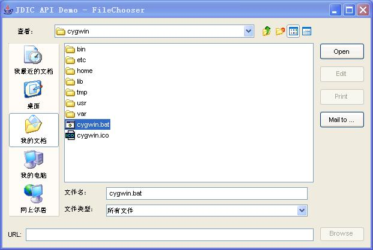
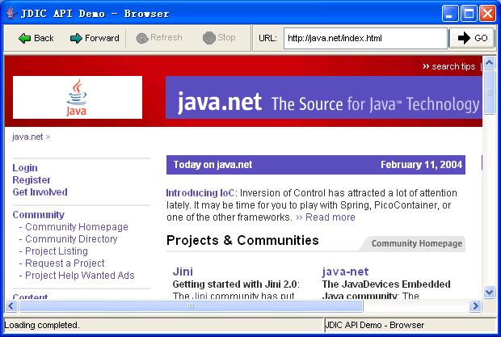

JDesktop Integration Components
|
JDesktop Integration Components |
JDesktop Integration Components (JDIC). This project aims to make Java applications first citizens of current desktop platforms without
sacrificing platform independence.
It provides Java applications with access to facilities provided by the native desktop such as the desktop mailer, the html rendering engine or registered document viewing applications. Additionally it provides the mechanisms by which Java applications can integrate into the native Desktop such as registering Java applications as document viewers on the desktop and creating desktop installer packages containing Java applications.
JDIC consists of a collection of Java packages, which are all subpackages of org.jdesktop.jdic, and a JNLP application packaging tool.
Package org.jdesktop.jdic.desktop: APIs to automate native applications, including the document viewer applications associated with a particular file type, the system browser and the system mailer.
Package org.jdesktop.jdic.filetypes: APIs to associate document viewer applications with file types.
Package org.jdesktop.jdic.browser: Provides an AWT component to enable the embedding of the desktop's web browsing component into Java applications and applets. The APIs support URL navigation, a basic history mechanism and progress notification.
JDIC Packager: A tool to package JNLP applications into installable packages of MSI/RPM/PKG format , the standard Windows/Linux/Solaris package format respectively.
Documentation
Download
Demos
(N/A) 